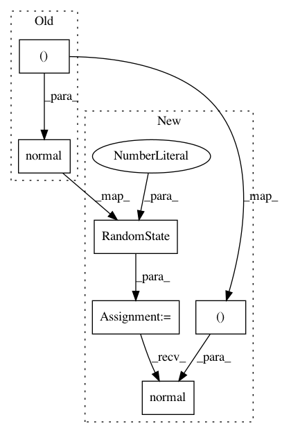

adcba89d0946bad7609227519e75d3143871afb8,tests/model_selection/dask_searchcv/test_model_selection_sklearn.py,,,#,50
Before Change
X = np.array([[-1, -1], [-2, -1], [1, 1], [2, 1]])
y = np.array([1, 1, 2, 2])
da_X = da.from_array(np.random.normal(size=(20, 3)), chunks=(3, 3))
da_y = da.from_array(np.random.randint(2, size=20), chunks=3)
After Change
raise AttributeError
rng = np.random.RandomState(0)
X = np.array([[-1, -1], [-2, -1], [1, 1], [2, 1]])
y = np.array([1, 1, 2, 2])
da_X = da.from_array(rng.normal(size=(20, 3)), chunks=(3, 3))
da_y = da.from_array(rng.randint(2, size=20), chunks=3)
In pattern: SUPERPATTERN
Frequency: 3
Non-data size: 6
Instances
Project Name: dask/dask-ml
Commit Name: adcba89d0946bad7609227519e75d3143871afb8
Time: 2018-06-28
Author: tom.w.augspurger@gmail.com
File Name: tests/model_selection/dask_searchcv/test_model_selection_sklearn.py
Class Name:
Method Name:
Project Name: scipy/scipy
Commit Name: 4eeb3b98b5d033c3c053942592b39fb58731c783
Time: 2021-02-24
Author: m.scherer@fu-berlin.de
File Name: scipy/spatial/transform/tests/test_rotation.py
Class Name:
Method Name: test_inv
Project Name: scipy/scipy
Commit Name: 4eeb3b98b5d033c3c053942592b39fb58731c783
Time: 2021-02-24
Author: m.scherer@fu-berlin.de
File Name: scipy/spatial/transform/tests/test_rotation.py
Class Name:
Method Name: test_inv_single_rotation